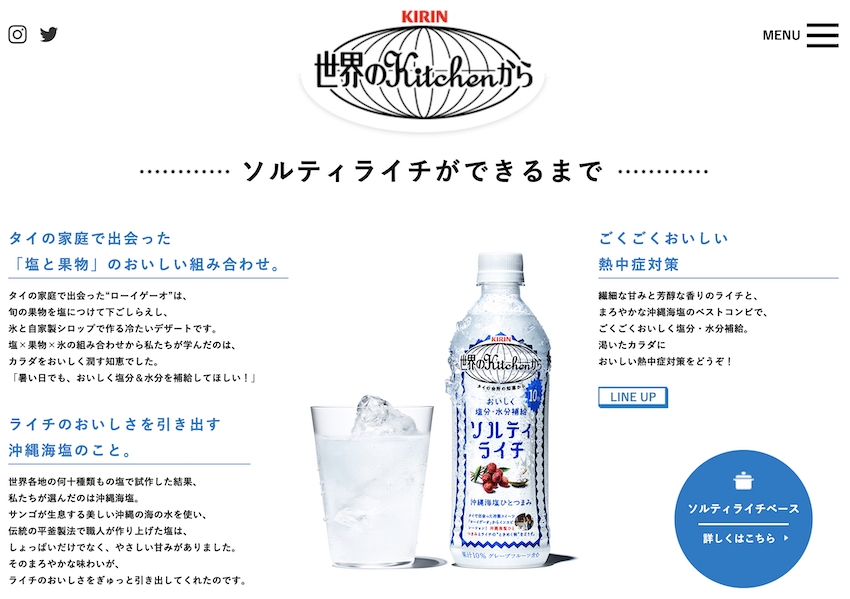
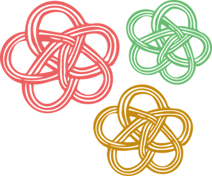
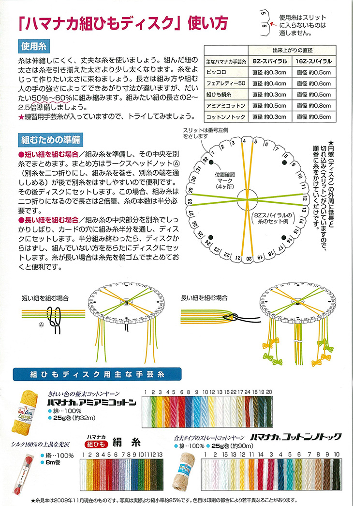

【12月ワーク】
Brand story原案

ストーリー集め
○世界観をイメージできること
世界観を相手に伝えるのに有効なのは、場面や昔の情景などをイメージさせることです。
ブランドストーリーでは、商品を作るきっかけとなったや過去の経験がそれにあたります。
実在する場所や、実際に作り手が経験してきたことをストーリーに入れることで魅力が増します。
またブランドには歴史がありますが、歴史や成り立ち、きっかけとなった最初の商品などブランド歴史を語ることで、共感を生みやすくなります。
○誰に売りたいかを明確にすること
自社の商品を誰に使って欲しいのかを具体的に定めることで、より細かいストーリーを作ることができます。
30代の男性など、大まかに設定るのではなく、どこに住んでいるのか、家族構成、年収など細かくペルソナを設定しましょう。
ターゲットを明確にすることでお客様が求めていることや問題点などがはっきりしてきます。
○ブランドがお客様に約束できることは何？
この商品を使ったらお客様に提供できる価値は何なのでしょう。
例えば、革製品だったら、丈夫さや他にはない手作りだからこその品質、または手触りなど簡単に言うと商品の売り込みたい特徴のことです。
また使うとどうなるのか？という未来を連想させることも重要です。
一生使える革製品をプレゼントしたら、家族が喜ぶ未来をイメージしたならそれを伝えることも良い方法でしょう。
連想やイメージしやすいようにストーリーを作ることが大切です。
「人気のブランドストーリーの作り方！ブランドコンセプトのコツ」
道用先生のアドバイスにていただいた具体例「キリン 世界のキッチンから」

簡単に会えない世の中だからこその繋がり
結婚式・披露宴の規模縮小による呼びたい人を呼べない新郎新婦
費用面で招待客をたくさん呼べない新郎新婦
人と人との繋がりを重要視する新郎新婦
一本一本の組紐に想いをのせて
新型コロナウイルス感染拡大
↓
結婚式・披露宴の延期、規模縮小
↓
招待客は、親しい人を本当に招待したい人に厳選する人が増加傾向であったが、
今回の新型コロナウイルスの流行によってその傾向がさらに進む？
↓
コロナ禍を経て、明確になった自分の大切な人に、“感謝”を伝え、“承認”をもらい、夫婦間で“しるし”を強固にする本質的な結婚式が今後加速
↓
直接会うことが難しい世の中だからこその繋がりの大切さ

新郎新婦家族や友人、プランナーなどの結婚式スタッフ、全員が一体となれる
結婚指輪や写真とは違う、肌で感じることのできるアイテムを“みんなで”つくるプロセス

市販には、組紐を簡単につくれるディスクというものがある。
このようなものを活用すれば、簡単に誰でも組紐を編むことができる。
そして、組紐を作るのに活用したこの「ディスク」自体もおしゃれなデザインで統一すれば、
ウェルカムボードなどの装飾に使えるかもしれない。
しかし、応用の部分はカップルそれぞれに考えて欲しい部分であると私個人は思っているので、
あくまで・・・
結婚報告→組紐キット→返信というような流れ
そして
出来上がって戻ってきた組紐同士をどのように組み合わせ利用するか
までを私自身は考えていきたい。
簡単にできるとはいえ、時間がかからないわけではない。そこに価値を見出すこともできるが・・・
また、挙式披露宴参加者にもこの組紐の新たな伝統に参加して欲しいと考えている。
挙式披露宴は、カップルによって参加人数も様々なため数がないと成り立たない内容では意味がない・